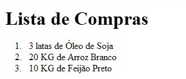
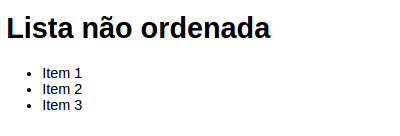
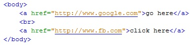

HTML significa Hipertext Markup Language que significa "Linguagem de Marcação de Hipertexto" é uma linguagem utillizada para a criação de páginas para a web
O HTML foi criado em 1991 por Tum Benners Lee no CERN na Suíça, foi projetado inicialmente para interligar instituições de pesquisas próximas e compartilhar documentos com facilidade, em 1992 foi liberado a biblioteca de desenvolvimento WWW (Word Wide Web) , uma rede de alcance mundial, que juntamente com o HTML proporcionou o uso em uma escala de rede mundial da WEB.
Um documento HTML válido precisa seguir obrigatoriamente a estrutura composta pelas tags HTML, HEAD, BODY.
Tags são as marcações inseridas nos textos do documento para dar intruções para o navegar para que o mesmo possa rederizar de uma página.
Lista é um importante recurso de HTML, pois permite criarmos tópicos de textos para uma melhor exemplificação de um determinado assunto, existe dois tipos de listas, as listas ordenadas e as listas não ordenadas.
Lista Ordenada:
Uma lista ordenada é também uma lista de itens. As listas de itens são marcadas com números ela é marcada com a tag OL seguida dos items da lista marcada pela tag LI
Exemplo:
Lista Não Ordenada:
É outro tipo de lista de itens, diferentemente das listas ordenadas elas são marcadas por bullets
Exemplo:
Tag de link são tags que permite inserir no documento HTML um hiperlink(âncora) em diversos elementos possibilitando ao usuário navegar para outro locais da páginas até páginas externas.
É formata pela tag a (âncora) com o tributo href onde irá ser adicionando o endereço do local onde se quer apontar.
Exemplo:
